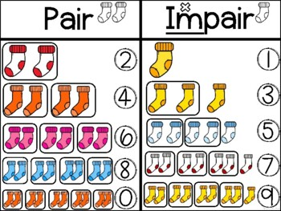

Situations
Compteurs de lettres
On désire compter le nombre de lettres dans les paragraphes suivants :
Premier paragraphe
Hello my friend.
Deuxième paragraphe
Imagine you're at the beach, and you're watching the waves. When two
waves meet, they can do one of two things: if the peak of one wave aligns with the peak of another, they add
up to make a bigger wave. This is called constructive interference. But if the peak of one wave meets the
trough (the lowest point) of another, they cancel each other out, making the water calm. This is destructive
interference.
Travail demandé
Ecrire l'algorithme d'un programme qui compte le nombre de lettres dans un paragraphe donné.
Donner un paragraphe ? Hello my friend.
D : 1 - E : 2 - F : 1 - H : 1 - I : 1 - L : 2
M : 1 - N : 1 - O : 1 - R : 1 - Y : 1Donner un paragraphe ? Imagine you're at the beach, and you're watching the waves. When two waves meet, they can do one of two things: if the peak of one wave aligns with the peak of another, they add up to make a bigger wave. This is called constructive interference. But if the peak of one wave meets the trough (the lowest point) of another, they cancel each other out, making the water calm. This is destructive interference.
A : 26 - B : 3 - C : 13 - D : 6 - E : 52 - F : 9
G : 8 - H : 23 - I : 19 - K : 5 - L : 6 - M : 6
N : 20 - O : 22 - P : 5 - R : 1
Solution : Algorithme
Algorithme compteur
Début
// Saisie d'un paragraphe
Ecrire("Donner un paragraphe ? ") ; Lire(par)
// Initialisation du tableau
Pour i de 0 à 25 Faire
cpt[i] ← 0
Fin pour
// Compter le nombre de lettres
Pour i de 0 à Long(par) - 1 Faire
Si "A" ≤ Majus(par[i]) ≤ "Z" Alors
indice ← ord(Majus(par[i])) - ord("A")
cpt[indice] ← cpt[indice] + 1
Fin Si
Fin Pour
// Afficher le nombre de lettres
Pour i de 0 à 25 Faire
Ecrire(chr(65+i), ":", cpt[i])
Fin Pour
Fin
Objet
Type
par
chaîne
i, indice
Entier
cpt
Tableau de 26 entier
Solution : Python
from numpy import array
# Saisie d'un paragraphe
par = input("Donner un paragraphe ? ")
# Initialisation du tableau
cpt = array([0]*26)
# Compter le nombre de lettres
for i in range(len(par)):
if "A" <= par[i].upper() <= "Z":
indice = ord(par[i].upper()) - ord("A")
cpt[indice] = cpt[indice] + 1
# Afficher le nombre de lettres
dlc = 0
for i in range(26):
if cpt[i] != 0:
if dlc % 6 != 0:
print(end=" - ")
else:
print()
dlc = dlc + 1
print(chr(65+i), ":", cpt[i], end="")
Pairs / Impairs
Ahmed a conçu un petit jeu pour sa sœur Sarra.

Nombres pairs et nombres impairs
L'ordinateur présente à la petite n nombres donné (5 ≤ n ≤ 15). Ces nombres seront
choisis au hasard entre 1 et 40.
Et Sarra doit deviner la liste des nombres pairs.
Après que la petite réponde le programme lui donne la correction.
Exemple 1 : Pour n = 10 et les nombres suivants :
Le programme affiche :
Liste des nombres pairs :
Exemple 2 : Pour n = 5 et les nombres suivants :
Le programme affiche :
Liste des nombres pairs :
Travail demandé
Quels sont les objets nécessaires pour résoudre ce problème ? Tracer le TDO.
Ecrire l'algorithme du programme ci-dessus.
Solution : Algorithme
Programme Pair_Impair
Début
// Saisie de n (5 ≤ n ≤ 15)
Répéter
Ecrire("Donner n [5, 15] ? ")
Lire(n)
Jusqu'à (5 ≤ n ≤ 15)
// Remplir le tableau t de valeurs aléatoires
Pour i de 0 à n-1 faire
t[i] ← aléa(1, 40)
Fin Pour
// Afficher les valeurs du tableau
Ecrire("Classer les nombres : pairs/impairs")
Pour i de 0 à n-1 faire
Ecrire(t[i])
Fin Pour
// Classer les valeurs
np ← 0
Pour i de 0 à n-1 Faire
Si t[i] mod 2 = 0 Alors
tp[np] ← t[i]
np ← np + 1
Fin Si
Fin Pour
// Afficher les nombres pairs
Ecrire("Liste des nombres pairs")
Pour i de 0 à np-1 Faire
Ecrire(tp[i])
Fin Pour
Fin
Objet
Type
par
chaîne
i, indice
Entier
cpt
Tableau de 26 entier
Solution : Python
from random import randint
from numpy import array
# Saisie de n (5 ≤ n ≤ 15)
n = int(input("Donner n [5, 15] ? "))
while not (5 <= n <= 15):
n = int(input("Donner n [5, 15] ? "))
# Déclaration des tableaux
t = array([0]*15)
tp = array([0]*15)
# Remplir le tableau t de valeurs aléatoires
for i in range(n):
t[i] = randint(1, 40)
# Afficher les valeurs du tableau
print("Classer les nombres : pairs/impairs")
for i in range(n):
print(t[i])
# Classer les valeurs
np = 0
for i in range(n):
if t[i] % 2 == 0:
tp[np] = t[i]
np = np + 1
# Afficher les nombres pairs
print("Liste des nombres pairs")
for i in range(np):
print(tp[i])
Anniversaire de Yassine
A l'occasion de son anniversaire le petit Yassine va distribuer des petites boîtes surprises contenant des
bonbons à ses amis.
Boîtes surprises bonbons
Les boîtes ne contiennent pas un nombre équitable de bonbons car le petit Yassine a imaginé la méthode de
distribution suivante de bonbons.
Les boîtes sont numérotées de 0 à na-1, avec na étant le nombre d'amis de Yassine qui sont
invités à l'anniversaire.
Pour chaque bonbon l'enfant :
tire un nombre au hazard, nbh, compris entre 0 et na-1
met le bonbon dans la boîte numéro nbh
Pour quelques bonbons le jeu semble amuser l'enfant, mais très vite le petit se lasse et il ne veut plus
continuer son jeu.
Observant son petit frère, Youssef, un lycéen en 2TI a décidé de l'aider. Pour celà, il a pensé à écrire un
programme qui :
Lit le nombre total de bonbons √† distribuer, 10 ≤ nb ≤ 200
Lit le nombre d'amis invit√©s, 3 ≤ na ≤ 10
Calcule, puis affiche le nombre de bonbons à mettre dans chacune des boîtes.
Nombre de bonbons [10, 200] ? 30
Nombre d'amis [3, 10] ? 5
Boîte 0 contient 4 bonbons.
Boîte 1 contient 8 bonbons.
Boîte 2 contient 6 bonbons.
Boîte 3 contient 5 bonbons.
Boîte 4 contient 7 bonbons.
Solution : Algorithme
Algorithme bonbons
Début
Répéter
Ecrire("Nombre de bonbons [10, 200] ? ")
Lire(nb)
Jusqu'√† 10 ≤ nb ≤ 200
Répéter
Ecrire("Nombre d'amis [3, 10] ? ")
Lire(na)
Jusqu'√† 3 ≤ nb ≤ 10
Pour i de 0 à na-1 Faire
boite[i] ← 0
Fin Pour
Pour i de 0 à nb-1 Faire
nbh ← al√©a(0, na-1)
boite[nbh] ← boite[nbh] + 1
Fin Pour
Pour i de 0 à na-1 Faire
Ecrire("Boîte", i, "contient", boite[i], "bonbons.")
Fin Pour
Fin
Objet
Type
i, nb, na
Entier
boite
Tableau de 10 entier
Solution : Python
from random import randint
from numpy import array
nb = int(input("Nombre de bonbons [10, 200] ? "))
while not 10 <= nb <= 200:
nb = int(input("Nombre de bonbons [10, 200] ? "))
na = 0
while not 3 <= na <= 10:
na = int(input("Nombre d'amis [3, 10] ? "))
boite = array([0]*na)
for i in range(nb):
nbh = randint(0, na-1)
boite[nbh] = boite[nbh] + 1
for i in range(na):
print(f"Boîte {i} contient {boite[i]} bonbons.")
Résumé
Tableaux
Définition
Un tableau est une structure de données qui est utilisée pour stocker plusieurs valeurs de même
type
Les éléments d'un tableau sont accessibles grâce à leurs indices
Exemple
Soit le tableau suivant :
tn
Amine
Israa
Sirine
Eya
0
1
2
3
Quel est le nom de ce tableaux ? tn
Quel est le nombre de ses éléments ? 4
Quel est le type de chacun de ses éléments ? chaîne
Déclaration en algorithme
En algorithme, un tableau est déclaré dans le TDO de la façon suivante :
TDO
Objet
Type/Nature
nom_tableau
tableau de nombre_éléments type_élément
nombre_éléments indique le nombre de cases du tableau.
type_élément indique le type des éléments.
Exemple
Pour déclarer le tableau tn utilisé précedemment on écrit :
TDO
Objet
Type/Nature
tn
Tableau de 4 chaîne
Déclaration en Python
En Python, pour déclarer un tableau il faut utiliser la fonction array de la bibliothèque
numpy.
Exemple 1
Pour déclarer le tableau tn utilisé précedemment on écrit :
from numpy import array
tn = array([str]*4) # tableau de 4 chaînesExemple 2
Pour déclarer divers types de tableaux on peut également écrire :
from numpy import array
te = array([int()]*10) # tableau de 10 entiers
tf = array([float()]*6) # tableau de 6 réels
tb = array([bool()]*20) # tableau de 20 booléensAccès aux éléments
L'accès à un élément indice
Exemple 1
Pour remplir le tableau tn on peut écrire :
tn[0] ← "Amine"
tn[1] ← "Israa"
tn[2] ← "Sirine"
tn[3] ← "Eya"
tn[0] = "Amine"
tn[1] = "Israa"
tn[2] = "Sirine"
tn[3] = "Eya
Example 2
Un tableau peut être, aussi, rempli par des valeurs saisies par l'utilisateur.
Pour i de 0 à 3 Faire
Ecrire("Nom de la ", i, "ème personne ? ")
Lire(tn[i])
Fin Pour
for i in range(4):
tn[i] = input(f"Nom de la {i} ème personne ? ")
Example 3
Pour afficher le contenu du tableau tn on peut écrire :
Ecrire(tn[0])
Ecrire(tn[1])
Ecrire(tn[2])
Ecrire(tn[3])
print(tn[0])
print(tn[1])
print(tn[2])
print(tn[3])
Exemple 4
On peut aussi utiliser une boucle :
Pour i de 0 à 3 Faire
Ecrire(tn[i])
Fin Pour
for i in range(4):
print(tn[i])
Renforcement
Inversion des éléments d'un tableau ★
Ecrire un programme qui permet d'inverser les éléments d’un tableau t de n entiers (n≥2).
Exemple :
Donner la taille du tableau (>=2) : 7
t [ 0 ]= 11
t [ 1 ]= 2
t [ 2 ]= 33
t [ 3 ]= 5
t [ 4 ]= 6
t [ 5 ]= 7
t [ 6 ]= 1
Tableau inversé : 1, 7, 6, 5, 33, 2, 11,
Extrêmums d'un tableau ★
Ecrire un programme qui permet d’afficher le maximum et le minimum dans un tableau t de n entiers (n≥2).
Exemple :
Donner la taille du tableau (>=2) : 5
t [ 0 ]= 11
t [ 1 ]= 2
t [ 2 ]= 33
t [ 3 ]= 4
t [ 4 ]= 67
Minimum : 2 - Maximum : 67
Eclatement selon le signe ★
Ecrire un programme qui permet de remplir un tableau t par n entiers non nuls (n≥2) et d'éclater
en deux tableaux : tn (contenant les éléments négatifs de t) et tp (contenant les éléments positifs
de t).
Exemple :
Donner la taille du tableau (>=2) : 10
t [ 0 ]= 3
t [ 1 ]= 2
t [ 2 ]= -5
t [ 3 ]= 4
t [ 4 ]= -7
t [ 5 ]= -8
Positifs : 3, 2, 4,
Négatifs : -5, -7, -8,
Somme des carrés des chiffres ★
Ecrire un programme qui permet de saisir les éléments d'un tableau t de n entiers de trois chiffres
(n≥2) et de remplir un tableau t2 de la façon suivante : les éléments de t2 sont égaux à la somme
des carrés des chiffres de t1.
Exemple :
Donner la taille du tableau (>=2) : 6
t1 [ 0 ]= 254
t1 [ 1 ]= 121
t1 [ 2 ]= 133
t1 [ 3 ]= 325
t1 [ 4 ]= 150
t1 [ 5 ]= 222
t2 : 45, 6, 19, 38, 26, 12,
Fusion de deux tableaux de même longueur ★
Ecrire un programme qui fusionne deux tableaux t1 et t2, de même longueur n dans un troisième
tableau t3 de longueur n3 = 2 * n.
La fusion se fera de la façon suivante :
Placer les éléments de t1 dans des cases impaires de t3
Placer les éléments de t2 dans des cases paires de t3
t3
7
9
3
2
2
4
1
7
0
1
2
3
4
5
6
7
Exemple :
Taille du tableau t1 (>=2) : 4
t1[ 0 ]= 9
t1[ 1 ]= 2
t1[ 2 ]= 4
t1[ 3 ]= 7
t2[ 0 ]= 7
t2[ 1 ]= 3
t2[ 2 ]= 2
t2[ 3 ]= 1
t3 : 7, 9, 3, 2, 2, 4, 1, 7
Première occurence ★★
Ecrire un programme qui permet de remplir un tableau t par n entiers non nuls (n≥2), de garder la
première occurrence de chaque élément.
Exemple :
Donner la taille du tableau (>=2) : 10
t [ 0 ]= 10
t [ 1 ]= 7
t [ 2 ]= 9
t [ 3 ]= 7
t [ 4 ]= 10
t [ 5 ]= 7
t [ 6 ]= 7
t [ 7 ]= 8
t [ 8 ]= 8
t [ 9 ]= 8
Le résultat est : 10, 7, 9, 8,
Intersection de deux tableaux ★★
Ecrire un programme qui permet de ranger et d’afficher les éléments qui figurent dans les deux
tableaux de n entiers a et b (n≥2).
Exemple :
Donner la taille du tableau (>=2) : 4
A[ 0 ]= 1
A[ 1 ]= 2
A[ 2 ]= 4
A[ 3 ]= 7
B[ 0 ]= 7
B[ 1 ]= 3
B[ 2 ]= 2
B[ 3 ]= 1
Les éléments communs sont : 1, 2, 7,
Conversion de la base 10 à la base 16 ★★
Ecrire un programme qui saisit un nombre n compris entre 0 et 255 et le convertit en hexadécimal.
Exemple :
Nombre à convertir : 241
241(10) = F1(16)
Fusion de tableaux selon leurs parités ★★
Ecrire un programme qui fusionne deux tableaux t1 et t2, de longueur n1 et n2 différentes, dans un troisième
tableau t3 de longueur n3 = n1 + n2.
La fusion se fera de la façon suivante :
Placer les éléments pairs de t1, puis les éléments pairs de t2
Placer les éléments impairs de t1 et enfin les éléments impairs de t2
Exemple :
Taille du tableau t1 (>=2) : 4
t1[ 0 ]= 9
t1[ 1 ]= 2
t1[ 2 ]= 4
t1[ 3 ]= 7
Taille du tableau t2 (>=2) : 7
t2[ 0 ]= 7
t2[ 1 ]= 3
t2[ 2 ]= 2
t2[ 3 ]= 1
t2[ 4 ]= 5
t2[ 5 ]= 8
t2[ 6 ]= 4
t3 : 2, 4, 2, 8, 4, 9, 7, 7, 3, 1, 5
Vas et viens ★★★
Soient t1 et t2 deux tableaux d’entiers de taille n (n≥2).
Ecrire un programme qui permet de transférer les éléments de t1 et t2 selon le principe suivant :
Les éléments de rang impair de t1 seront rangés dans t2 en ordre inverse (de droite à gauche) et
les éléments de rang pair de t1 seront rangés dans t2 (de gauche à droite).
Exemple :
Donner la taille du tableau (>=2) : 9
t1 [ 0 ]= 12
t1 [ 1 ]= 13
t1 [ 2 ]= 41
t1 [ 3 ]= 5
t1 [ 4 ]= 19
t1 [ 5 ]= 13
t1 [ 6 ]= 4
t1 [ 7 ]= 8
t1 [ 8 ]= 15
t2 : 12, 41, 19, 4, 15, 8, 13, 5, 13,
Le marchand de légumes ★★★
Le marchand de légumes vend les pommes dans des sacs de la façon suivante :
Des sacs d'une seule pomme,
Des sacs de deux pommes,
Des sacs de quatre pommes,
Des sacs de huit pommes,
Des sacs de seize pommes,
Le marchand refuse de vendre deux sacs qui contiennent le même nombre de pommes à un seul client.
Calculer le nombre minimal de sacs achetés par les clients suivants :
Islem veut 14 pommes,
Ayoub veut 3 pommes,
Alaa veut 8 pommes,
Amine veut 10 pommes.
Ecrire le programme qui calcule le nombre de sacs nécessaires pour satisfaire la commande d'un client
donné.
Exemple :
Nombre de pommes : 25
un sac de 1 pommes
un sac de 8 pommes
un sac de 16 pommes
Segmentation d'un tableau ★★★
Ecrire un programme qui segmente un tableau t de n entiers de la façon suivante :
Les éléments inférieurs à t[0] sont placés au début du tableau
Les éléments supérieurs à t[0] sont placés à la fin du tableau
L'élément t[0] est placé au milieu du tableau
Les nombres du tableau sont des nombres aléatoires compris entre 1 et 999.
Exemple :
Taille du tableau t (>=2) : 10
Avant segmentation : [203, 32, 515, 19, 762, 762, 884, 157, 459, 337]
Après segmentation : [19, 32, 157, 203, 762, 884, 762, 459, 337, 515]Explication :
203
32
515
19
762
762
884
157
459
337
Les éléments inférieurs à 203 sont en rouge
Les éléments supérieurs à 203 sont en vert
Station de services la plus proche ★★★
Un automobiliste en manque de carburant veut aller à la station de services la plus proche pour faire le
plein.
Ecrire un programme qui :
Saisit le nombre de stations de services n qui se trouvent aux alentours
Remplit un tableau dist par les distances des stations de services
Affiche le numéro de station de la plus proche ainsi que sa distance.
Doublure d'acteurs ★★★
Lors de tournage d'un film certaines scènes doivent être doublées par une autre personne qui possède une
certaine ressemblance à l'acteur principal.
Disposant d'un tableau qui contient le degré de ressemblance de n candidats avec l'acteur principal
sélectionner le candidat adéquat.
On suppose que la caractéristique de l'acteur est représentées par un entier entre 0 et 100.
On suppose que les caractéristiques des doublures sont aussi représentées par des entiers entre 0 et 100
stockés dans un tableau.
Ecrire un programme qui :
saisit la caract√©ristique de l'acteur principal 0 ≤ car ≤ 100,
saisit le nombre de doublures (nombre de personnes qui peuvent remplacer l'acteur)
2 ≤ n ≤ 10,
remplit un tableau t par les caractéristiques des doublures,
affiche le candidat qui ressemble le plus à l'acteur principal.
Caractéristique de l'acteur ? 78
Nombre de doublures ? 10
Caractéristiques des doublures : [58, 55, 79, 91, 44, 4, 44, 2, 4, 22]
Le candidat est n° 2 sa caractéristique est 79